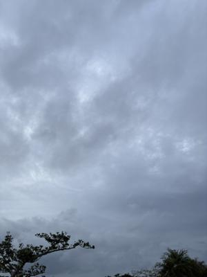
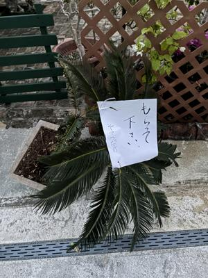

うるがいの話 ある日
最新: Microsoft365【うるがいの話 ある日】とは 一日だけのプログです
『うるがいの話』の最新一日だけのプログで、通信料が少なく経済的だ。カニの画像をクリックすると全ての日付が載る『うるがいの話』サイトを表示します
|
|
【うるがいの話】 うるがい(ｳﾙｶﾞｲ urugai)とは、『もずくがに』の名前でとても大きくなります。 |
|---|---|
|
|
【カミマヤーの話】 猫のことを方言でマヤーといいます。カミマヤー（kamimayaa）とは、神の猫のことです。 |
|
【たながぁの音楽】 たながぁ（ﾀﾅｶﾞｰ tanagaa）とは手長えびのことで、何種類かあり大きいのは車 エビぐらいになります。 |

|
【ぶながぁの話】 ぶながぁ(ﾌﾞﾅｶﾞｰ bunagaa)とは、赤い髪の毛、赤い身体、そして身長は１ｍ２０ｃｍ ぐらい、川の蟹を食べているの目撃された。場所は沖縄県国頭郡大宜味村のと ある村僕の隣近所に住んでいる爺さんから、聞いた話です。 |
|
|
【ギーマの話】 ギーマ(giima)とは、山原の里山に咲くスズランに似た、 花を付けます。実は食べられます、 気が付くと口の周りが紫になっています。 |
2026年11月15日 (日）Microsoft365
16:17

金曜日マイクロソフトの世界的な大規模障害が発生した。現役
でなかったのは良かったのでしょうか。３年前にちょこっと仕
事したプロジェクトでは、今回障害があった「Ｍｉｃｒｏｓｏ
ｆｔ３６５」、メールサービス「Ｏｕｔｌｏｏｋ」や「Ｔｅａ
ｍｓ」をバシバシ利用していた（ちなみ、それ以前の職場では
別のソフトを利用していたので慣れるのにあわれしたが）。こ
れらのひとつでも、利用出来なくなると仕事はお手上げ状態。
退職した職場でも３６５を利用することになっていたようだか
ら、エライことになっていたでしょう。と、歯医者の病院でニ
ュースを見ながら、思っていた。診察の待ち時間に単行本『酔
って記憶をなくします』を読んでたら、ふと酔って入札資料が
入ったカバンを紛失した会社員の出来事を思い出しました。入
札資料は我々で作成した。おかげでコンプラ報告、役員会、入
札のやり直し、大変でしたね。
もう、その会社員は退職してるとは思うが。本を読むと、常習
犯が多かった。また、どこかで酔って失敗をしているのだろう
か。
ジョギング途中、『松をもらってください』と、貰う人いるの
でしょうか、興味あります。

県立図書館のサイトが、エラーになります。告知はないような
ので、何らかなのトラブルか。